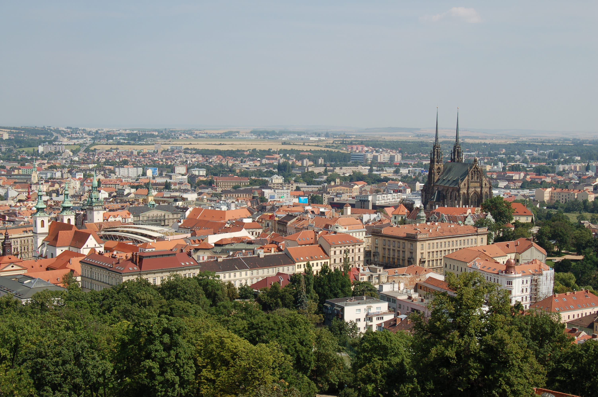

Дата народження: 23.07.2007.
Місце народження: м. Бровари.
Освіта: Технічний ліцей міста Києва.
На даний момент навчаюся в КПІ ім. Ігоря Сікорського.
Одним із міст, яке мені найбільше сподобалося, є Брно. Це красиве місто в Чехії з цікавою архітектурою, затишними вулицями та великою кількістю визначних місць. Мені сподобалася атмосфера міста та його поєднання історичної і сучасної архітектури.
